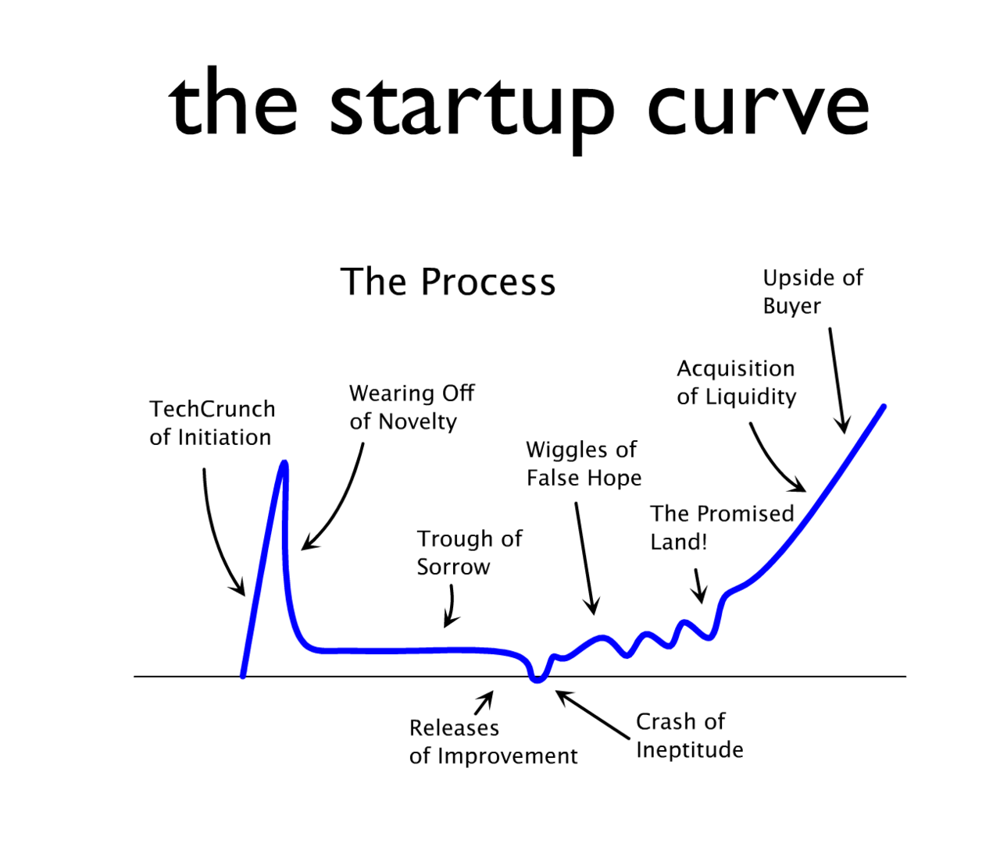

Tech Entrepreneurship
Advice is dangerous
I started my career in economics and data science. I quickly developed a pet peeve that's committed by everyone, including myself. Human beings want so badly to pattern match, that we instinctively generalize our own experiences to the broader world around us. Conversely, we take scientific studies, executed on large populations of people that might not be anything like us, and we attempt to apply those lessons directly to ourselves.
This sort of mistake is incredibly easy to make in health issues. A few years ago I developed crushing back pain. I solved that back pain over the course of two years. I was highly motivated. My solution was a little innovative and I'm proud of it, so whenever I hear someone tell me about their back pain, I have to fight the urge to launch into a diatribe about how they need to use my stretching protocol because it will fix them!
And it probably will fix them. I'm not wrong. But maybe 5% of the population will adhere to this ridiculous stretching protocol that I came up with. It's very effective, but it HURTS and you'll dread doing it. So it's not a workable solution for anyone who's not already spending hours at the gym each week.
So, in short... I can give you advice from my own experience... but it's unlikely to be directly applicable.
The flip-side would be the headlines of most weight-loss studies. For instance, the New York Times published a story titled, "Scientists Find No Benefit to Time-Restricted Eating". They designed a large study that put folks on either an intermittent fasting diet or a more generalized caloric restriction diet. Sure enough, both groups lost the same amount of weight.
But I've been doing intermittent fasting for the last eight years, and I swear by it. I've done caloric restriction diets as well, and while it works... I have a much harder time adhering to it. So yeah... in the general population, caloric restriction and intermittent fasting are basically the same. But I'm not the general population. I'm a specific person, for whom intermittent fasting and caloric restriction have wildly different outcomes.
The moral of the story is two-fold.
- I can't give you advice. I can only talk about my own experiences and hope to inspire you to have your own experiences.
- Don't take my story and blindly apply it to yourself. What worked for me will probably NOT work for you. You're on a different path.
My story
The gist of my story is that I desperately want to be a successful entrepreneur. I always have. I've started a few businesses. I've launched a bunch of apps. And while the individual attempts have mostly failed, the broader course of my career has been successful.
Let's start with the losses. All of these hurt. All of them cost months or years of productive time.
Losses
- Zeepers was a zipper purse business with a college friend where we manufactured zipper purses and sold about five of them.
- I earned a 4-year degree at BYU, double-majoring in economics and finance. I graduated Magna Cum Laude and proceeded to face plant at my first job out of college as an economic analyst. My personality is a total mismatch for that field. They fired me after about a year.
- I started ScorpionSurival.com, an online dropshipping business where I sold prepper gear like knives, flashlights and emergency blankets. I sold about $50k in product over a year and lost money.
- I tried my hand at freelancing after I'd transitioned to software engineering. Freelancing was profitable, but I could never get enough work to support myself and eventually I had to quit.
- I got fired from my first dev job. Not because I was a bad dev, but because I had picked a horrible company to work for. They were getting sued by their clients and went out of business shortly thereafter.
- I've launched about four web apps that have gone no where. The most successful is a workout timer with a few hundred casual users, none of whom click on ads or pay for anything.
- I tried to build a business around Firebase, becoming a Firebase influencer online, writing a ton of Firebase-related content, giving talks and building up a YouTube channel. I even launched a Udemy course. It's been a ton of fun. I will use Firebase forever, and I still participate in the space... but there's zero money in it for me.
That list was painful to write out. I don't think about those experiences very often. They feel a little embarrassing, even though I know they shouldn't be. I just don't identify with my failures. I'd much rather dwell on the handful of wins.
The list of wins is shorter.
Wins
- I was an excellent student with a 4.9 GPA across two majors at a competitive university.
- I taught myself how to code on the job. The code was hideous, but my first app solved its problem so thoroughly that the company's in-house developers took five years to replace it.
- My first real app turned into Calligraphy.org, a business with my wife that's still running today, 10 years later. My wife and I went full-time on Calligraphy.org for about four years, supporting our family and, at its peak, earning more money in one year than I've ever earned as a developer.
- Building Calligraphy.org improved my programming skills immensely, enabling me to get corporate jobs and provide technical leadership to development teams.
- I took over the front-end of BoomPop.com from a handful of contractors and, with the help of our excellent team, helped to rework a large codebase and propel our company to its Series A funding.
Takeaways
My story had a bunch of takeaways that could be inspiring. Maybe they apply to you, or some situation you've encountered or will encounter 🤷
Know thyself
I am not a triple-threat entrepreneur. I can fake business dev and sales/marketing, but my true skills all lie in engineering.
Some nights I can't sleep because my mind is racing with businesses ideas and marketing campaigns. When I finally get out of bed in the morning and start to apply those ideas... they're mostly trash. They don't map to the real world. My instincts are not great. I've wasted thousands of hours pursuing projects that were doomed from the start, because I couldn't see the flaws in my own plans.
But when I fall asleep dreaming of technical solutions to some engineering problem... I wake up the next morning and it works! My businesses have never failed due to technical problems. I can always figure out the code side of things. Maybe my first or second idea doesn't stick, but I can consistently generate new technical approaches until one works. I never hit a dead end.
Don't chase losses
I've shut down projects, abandoned businesses and been fired twice.
Each loss becomes a valuable lesson that will drive the next success. Do not dwell on the losses. When you've given an idea your all, and it's just not sticking... get out of there! Stop wasting time!
This lesson is incredibly general. It's a philosophical truism. Don't chase your losses.
The devil is in distinguishing between a doomed business model and Y Combinator's famed "Trough of Sorrow".

I've consulted with companies that are in the Tough of Sorrow. Some pull out. Most don't. The worst founders fail to recognize when their dreams are dead and spend years chasing them. It's crushing to talk to them. They feel like success is just around the corner, but the more you talk to them, the more delusional they sound.
Knowing when to quit is an absolutely core part of the entrepreneurial skill set.
I don't play poker, but I love to watch it online. There are two kinds of "hero" moves. One is the "Hero Call". The other is the "Epic Laydown".
The Hero Call is when you realize that your opponent is bluffing and you call them with a SLIGHTLY better hand. It's when your opponent goes all in, and you only have jack-high... but you call them anyway... and win.
In entrepreneurship, that equates to having a winning business that's just struggling to find its feet. You push through. You spend more money and take pay cuts. You grind it out a few more months... and you finally start to get traction, proving the business out and earning your next round of funding.
The Epic Laydown is when you have a great hand, and you've put most of your chips in the pot... but you realize that something doesn't add up. You've made a mistake, and you might not even know what it is... but you'd better lay down that hand and stop bleeding money. You lay it down and find out that your triple kings are beaten by your opponent's quad threes.
This happens all of the time in business. My current startup just pivoted away from a successful line of business because the fundamentals of the market changed. We were the market leaders, so when we saw our AdWords costs go up and our conversion rate go down... we did some math... played out a bunch of likely scenarios... and realized that we needed to develop a new line of business quickly, or we'd be dead in a year.
We have a bunch of competitors who are still pursuing that original business plan, and maybe one or two of them will survive... but we've already found a larger addressable market and we're six months into building the new business.
When have you successfully ground it out, pushed through the Trough of Sorrow, and come out a winner? Almost every success involves a grind-it-out moment. You've got stories like this.
And everyone's held a stock for too long, or chased a doomed soccer career, or stuck with a college class that they should've dropped during the first week. Take a minute to meditate on your own failures. What were the first hints of failure? Could you have made an Epic Laydown, or did you need to grind it out?
Learn from the wins and the losses.
Entrepreneurship is a faith-based activity.
Bootstrapping beats VC-funding for many people
Your local plumber or lawn guy runs a bootstrapped business. MailChimp was bootstrapped. So are a lot of Amazon and eBay sellers. The software world is chock full of bootstrapped success stories, but you seldom hear them, because they're selling business-to-business software in some weird niche that you've never heard of. They could be making millions, and only their customers know their names.
Overnight success, a decade in the making
Some folks are naturals. They take to it at a young age and have all the right instincts. The rest of us have to accumulate hard-won experience for years and often decades before we're ready for a big win.
And sometimes we just get lucky. Don't take lessons from others' luck. If a thousand untalented people try to start businesses, a few of them will be successful their first try. They'll likely turn into one-hit wonders if they can't buckle down like the rest of us, grind it out for ten years and earn the experience they need for a second big win.
Philosophical component
Entrepreneurship has a philosophical component.
We're building something out of nothing. We're relying entirely on our mental model of the world.
So much of our landscape is unknowable, that we need to absolutely maximize our knowledge of everything we can possibly understand ahead of time.
We need deep introspection into our own psyches. We have strengths and weaknesses that must understand at the outset. And we need to communicate with those around us to understand their motivations, strengths and weaknesses.